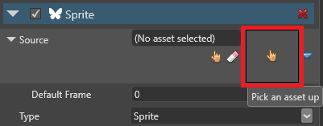

Use sprites
Intermediate Programmer
To add a sprite to a scene, add a sprite component to an entity. Afterwards, you can control the sprite with a script.
Add a sprite component
In the Scene Editor, select the entity you want to add a sprite to.
Tip
To create an entity, right-click the scene or Entity Tree and select Empty entity.
In the Property Grid, click Add component and select Sprite.

Game Studio adds a Sprite component to the entity.
From the Asset View, drag the sprite sheet to the Source field in the Sprite component:
Alternatively, click
 (Select an asset):
(Select an asset):
Then choose a sprite sheet:

Game Studio adds the sprite to the entity.
Sprite component properties
You can access the sprite component properties in the Property Grid.
| Property | Function |
|---|---|
| Source | The source image file for the sprite |
| Type | Sprites have 3D space in the scene. Billboards always face the camera and appear fixed in 3D space. |
| Color | Applies a color to the sprite |
| Intensity | The intensity by which the color is scaled (mainly used for rendering LDR sprites in HDR scenes) |
| Premultiply alpha | Premultiply color components by their alpha component |
| Ignore depth | Ignore the depth of other elements in the scene when rendering the sprite. This always places the sprite on top of previous elements. |
| Alpha cutoff | Ignore pixels with low alpha values when rendering the sprite |
| Sampler | The texture sampling method used for the sprite: Point (nearest), Linear, or Anisotropic |
| Swizzle | How the color channels are accessed. Default leaves the image unchanged (finalRGB = originalRGB) Normal map uses the color channels as a normal map Grayscale (alpha) uses only the R channel (finalRGBA = originalRRRR), so the sprite is red Grayscale (opaque) is the same as Grayscale (alpha), but uses a value of |
| Render group | Which render group the sprite belongs to. Cameras can render different groups. For more information, see Render groups and render masks. |
Use sprites in a script
You can use scripts to render sprites at runtime. To do this, attach the script to an entity with a sprite component.
For information about how to add scripts to entities, see Use a script.
Code sample
This script displays a sprite that advances to the next sprite in the index every second. After it reaches the end of the sprite index, it loops.
using Stride.Rendering.Sprites;
public class Animation : SyncScript
{
// Declared public member fields and properties are displayed in Game Studio.
private SpriteFromSheet sprite;
private DateTime lastFrame;
public override void Start()
{
// Initialize the script.
sprite = Entity.Get<SpriteComponent>().SpriteProvider as SpriteFromSheet;
lastFrame = DateTime.Now;
}
public override void Update()
{
// Do something every new frame.
if ((DateTime.Now - lastFrame) > new TimeSpan(0, 0, 1))
{
sprite.CurrentFrame += 1;
lastFrame = DateTime.Now;
}
}
}